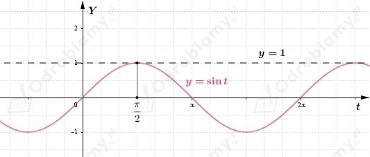
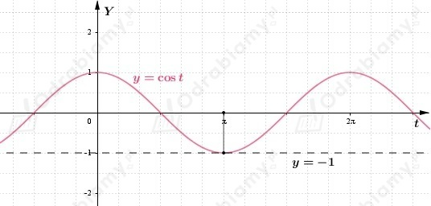
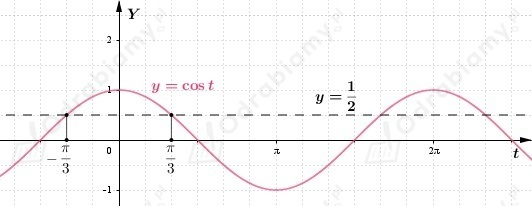
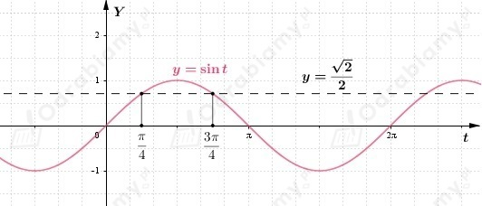
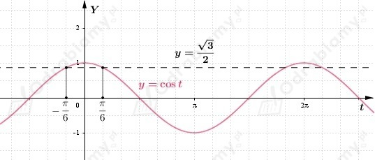
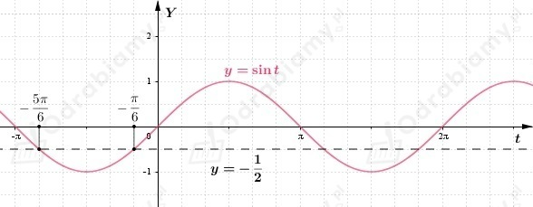
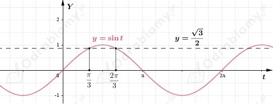
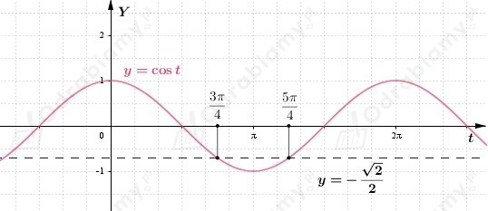

a)
Zastosujmy podstawienie t=3x

Z wykresu funkcji sinus możemy odczytać, że równanie jest spełnione dla
Zatem
b)
Zastosujmy podstawienie t=2x

Z wykresu funkcji cosinus możemy odczytać, że równanie jest spełnione dla
Zatem
c)
Zastosujmy podstawienie t=4x

Z wykresu funkcji cosinus możemy odczytać, że równanie jest spełnione dla
Zatem
d)
Zastosujmy podstawienie t=2x-𝜋/4.

Z wykresu funkcji sinus możemy odczytać, że równanie jest spełnione dla
Zatem
e)
Zastosujmy podstawienie t=3x+𝜋/2.

Z wykresu funkcji cosinus możemy odczytać, że równanie jest spełnione dla
Zatem
f)
Zastosujmy podstawienie t=2x+𝜋/6.
Z wykresu funkcji cosinus możemy odczytać, że równanie jest spełnione dla
Zatem
g)
Zastosujmy podstawienie t=𝜋x/4-𝜋.

Z wykresu funkcji sinus możemy odczytać, że równanie jest spełnione dla
Zatem
h)
Zastosujmy podstawienie t= 𝜋x.

Z wykresu funkcji sinus możemy odczytać, że równanie jest spełnione dla
Zatem
i)
Zastosujmy podstawienie t=2𝜋x.

Z wykresu funkcji cosinus możemy odczytać, że równanie jest spełnione dla
Zatem